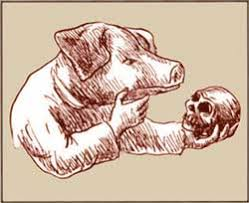
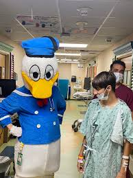

Articles
What Do you mean??? The Doctor is a Pigeon??
Dr. Cornelius Featherstone III, a distinguished pigeon of 47 years, has been practicing beak medicine since he accidentally swallowed a stethoscope in 1998 and never looked back. Board-certified in both Crumb Extraction and Advanced Puddle Diagnostics, he runs his clinic from a particularly prestigious gutter on 5th Avenue. His groundbreaking research on "Why Bread Is Better Than Seeds (Emotionally)" was almost published in a journal once. Patients describe him as "surprisingly warm for someone with no neck" and "not afraid to make eye contact with a bus."
Beyond his medical achievements, Dr. Featherstone is widely regarded as the most commanding presence in any plaza, park, or fast food parking lot he graces. Witnesses report that when he walks, time slows slightly. Pigeons part. Squirrels reconsider their life choices. He does not strut — he processes. His signature move of tilting his head exactly 12 degrees while maintaining unblinking eye contact has been described by ornithologists as "deeply unsettling" and by his patients as "healing." Three separate street artists have painted murals of him without ever having met him, claiming they simply felt his presence and had no choice.

Professor Gwendolyn Snoutberg, Pig Philosopher and General Practitioner
Few figures in the medical community command as much respect and mild confusion as Professor Gwendolyn Snoutberg. Holding degrees in both Medicine and Existential Mud Studies from a university she refuses to name, she has dedicated her career to treating animals who simply seem a bit off. Her diagnostic method consists of sitting very still, sighing once, and then writing a prescription. No one has ever questioned this. Her memoir, I Knew Before You Arrived, sat on a bestseller list that may or may not have been real.
She walks slowly and with great intention. Farmers have reported that crops grow better in the weeks following her visits, though she has never commented on this.

Dr. Barnabas Quacksworth, Duck Cardiologist
Dr. Barnabas Quacksworth is the foremost authority on the duck heart, an organ he describes as "loud, confident, and completely unreasonable." His clinic floats — literally — on a pond outside Bruges, accessible only by small wooden boat or a very determined swim. He has performed over 200 successful procedures, all of which were scheduled for 6am because that is simply when he wakes up and he sees no reason to adjust. His patients rate him five stars universally, though none of them were asked.
Those who have encountered him on the water describe an almost supernatural calm radiating from his general direction. He does not rush. He does not worry. He arrived before you and he will leave after you and somewhere in that fact is a lesson he will not spell out for you.
